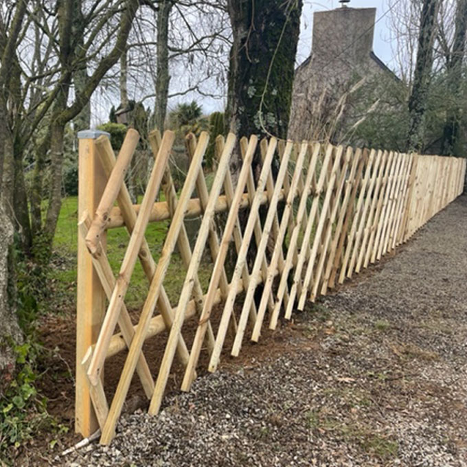
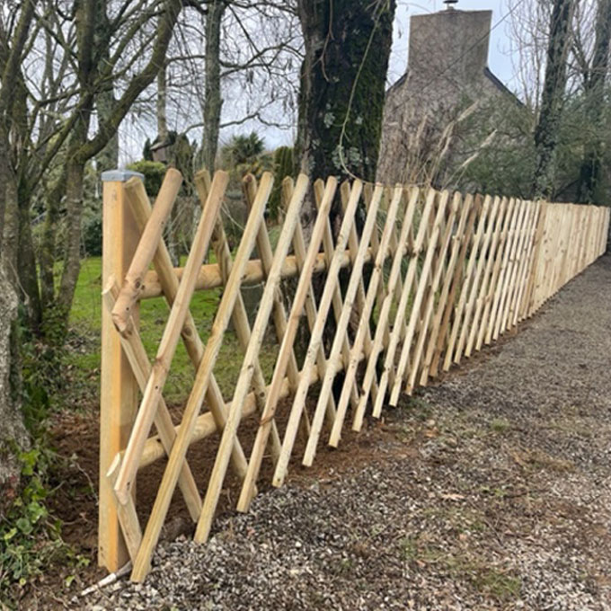
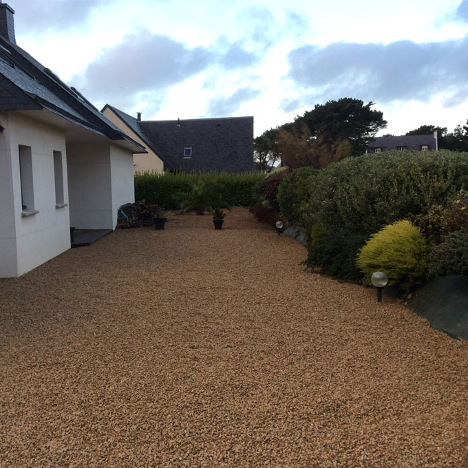
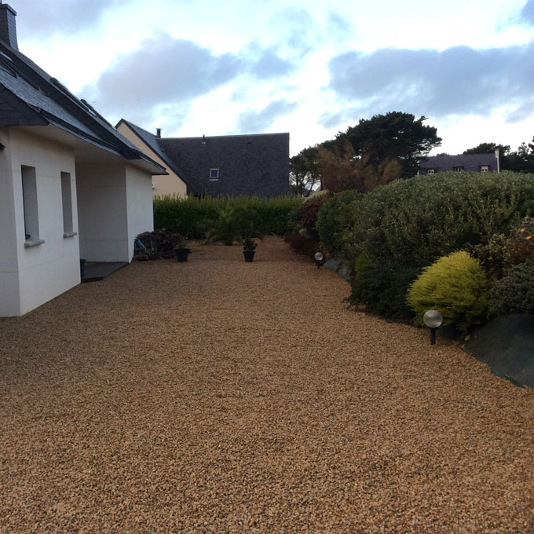

 



Terrassement Paysager
Par le terrassement paysager nous venons façonner selon vos demandes, rendre le terrain plat ou par la création de paliers, d'enrochement, ou de rocailles et ainsi faciliter la réalisation des maçonneries paysagères qui peuvent être implantées par la suite.
Maçonnerie Paysagère
Avec la création de muret, d'escalier (de marches ou gradines) ou tout autre type de maçonnerie paysagère, vous apporterez
du relief, de la perspective, de la profondeur ou un espace clos à votre jardin.
Murs et murets, bordure, dallage, pavage, clôture rigide ou souple, escalier et gradine... Nous travaillons
avec différents matériaux (naturel et composite).
Végétalisation
En relation avec les pépinières locales et selon vos goûts, nous pouvons vous proposer une large palette de végétaux s'adaptant et s'intégrant parfaitement dans votre environnement. Nous vous guiderons sur l'entretien à effectuer. Nous réalisons aussi les gazons fleuris et traditionnels.